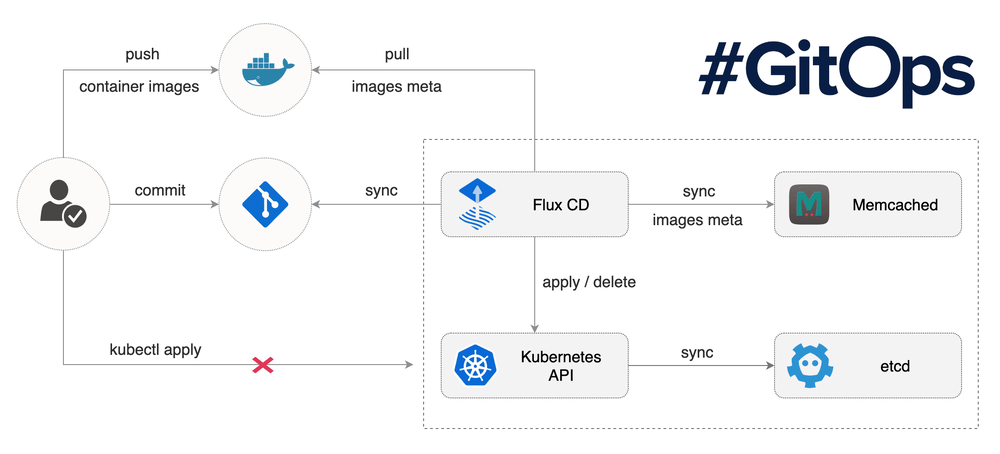
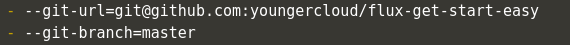
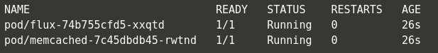
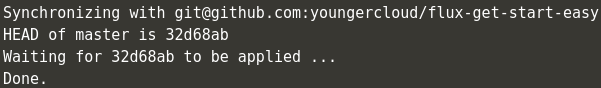
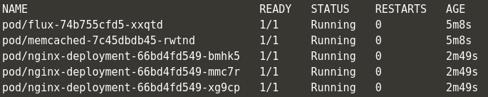
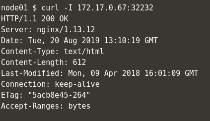
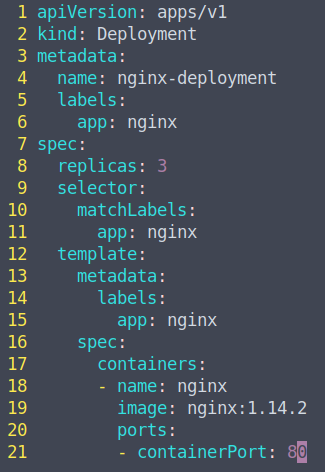
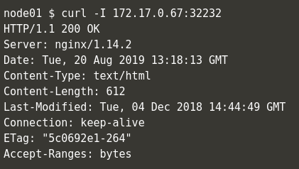
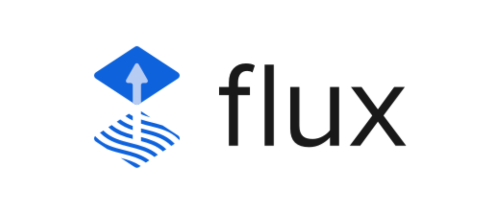

什么是GitOps?
GitOps, 这已经并不是一个新鲜的概念了。2018年5月初在丹麦举行的哥本哈根KubeCon大会上，Weaveworks公司的演讲将GitOps与Istio Service Mesh进行了集成，如果说以前Docker Swarm与Kubernetes竞争之时Docker公司提出了Docker Native，CNCF基于Kubernetes提出了自己的Cloud Native，毫不夸张的说，Weaveworks公司开源的Weave Flux也可以说是GitOps的‘Native’了。而在2019年8月20日，Flux项目也最终成功加入了CNCF Sandbox，成为了CNCF Sandbox中的一员。

当然，GitOps的概念是从DevOps慢慢延伸出来的。把时间轴向前调调整，如2014年左右如火如荼的DevOps一样，当时从大到小的互联网企业都在招聘DevOps工程师。然而慢慢脱离了以前DevOps理念的不成熟，随着DevOps的发展，人们才慢慢意识到DevOps并不是所谓的"运维开发”, 而是一种注重了开发团队、测试团队、运维团队的更好的沟通协作，从而去实现持续集成和持续交付的最佳实践。
如果说之前对DevOps的理念理解是"顾名思义"而导致的问题，那么现在的GitOps也多多少少面临着同样的境地，GitOps绝非是仅仅用Git去做CI/CD的Pipeline，既然Weaveworks开源的Weave Flux可以成为GitOps的主流实践，其给出的描述是这样的: “如果说DevOps的CI/CD Pipeline的终点是互联网公司交付的产品或者是我们最终发布的线上业务，GitOps则把目标转向了当前的容器编排事实标准–Kubernetes，而GitOps则是一种进行Kubernetes集群管理和应用程序交付的方法。”
这样一来，GitOps就于传统的DevOps划清了界限。更明确一点说: “DevOps注重的是产品发布中开发/运维/测试的沟通与协作，GitOps则更加贴近集群管理。这个集群还得是"拥抱云原生"基础设施的Kubernetes集群。”
既然贴近了云原生和Kubernetes，就不得不提到云原生12要素。更值得关注的是，这12要素的第一条就是"基准代码，多份部署”。GitOps的设计者也意识到了这一点，在GitOps中，一旦Git仓库中的代码被更改，CI/CD Pipeline也就会对我们的Kubernetes集群进行更改。GitOps摒弃了传统部署环境的多份环境多份配置文件，并且设计者也应用了Kubernetes控制循环的思想，用Git管理的Kubernetes集群的期望状态也会和Git仓库中的实时状态不断地进行比较。
接下来的实战就一起来看看Flux项目是怎么用Git来管理整个Kubernetes集群的。
Flux CD 实践
Flux的安装默认提供了两种方式，传统的使用yaml文件部署的方式或者通过Helm的部署。但是Flux暂未支持Helm的V3版本，所以我们使用传统方式去部署(笔者闲谈:由于笔者使用的是Helm V3版本，也坚信去Tiller化的正确性，但是目前开源社区对Helm V3版本的响应程度着实不高，也导致更多人把精力转向了Kubernetes原生的Kustomize)
我们直接Clone Flux项目的Github Repo
% git clone https://github.com/fluxcd/flux
% cd flux/
% vim deploy/flux-deployment.yaml
在这里，我们需要将–git-url更改为存储生产环境yaml文件的Github Repo，当然如果不想把生产环境的yaml文件托管在Github上，Flux也提供了Gitlab的支持去更好的进行私有环境的部署与管理。

--git-url=git@github.com:YOUR-GITHUB/REPO-NAME
PS: 因为官方的例子过于繁琐，笔者在这里提供了更直观的例子。这个例子很简单，只由一个Nginx-Deployment和带有NodePort的Nginx-Service组成，项目已经存储在Github
部署Flux到Kubernetes集群中
% kubectl apply -f deploy
PS: 如果使用minikube进行实验，请确保安装socat
% yum install -y socat
确保Flux Pod进入Running状态并Ready后，我们还需要下载fluxctl二进制命令包，fluxctl将与Kubernetes集群中的flux Pod进行交互。

% wget https://github.com/fluxcd/flux/releases/download/1.13.1/fluxctl_linux_amd64
% mv fluxctl_linux_amd64 fluxctl && chmod +x fluxctl && cp fluxctl /usr/local/bin/
fluxctl安装好之后，我们需要部署我们的Deploy Key到Github Repo上，以实现本地集群和远端Github Repo的连调。
我们可以通过fluxctl identity命令获取Flux的SSH公钥，如果你想打造一个更方便管理的环境，Flux也可以使用系统SSH所产生的私钥，具体的做法是先删除原本Flux的secret，再通过–from-file=priveate_key的方式重新创建需要被Pod挂载的Secret私钥。
% fluxctl identity
当我们在Git Repo中通过SSH私密部署好Deploy Key并Allow Read/Write Access权限后，我们就可以尝试本地环境和远端Repo的同步了。
% fluxctl sync
如果没有问题的话，Flux会返回以下信息:

这条信息的出现表明了集群同步已经完毕。接下来我们就可以尝试使用Git去管理Kubernetes集群了。
我们先执行kubectl get all查看Kubernetes集群的当前状态。
可以清楚的看到，我们没有手动的使用kubectl执行任何操作，Flux已经自动的帮我们做好了本地集群和远端Git Repo的同步工作，Nginx-Pod已经处在了Running状态。

我们可以使用curl命令对已经被Flux部署在Kubernetes集群中的Nginx进行访问测试，可以看到访问测试是成功的。

在这时，如果我们尝试用git去对集群做出更改，整体的流程和我们平时修改代码的流程是大致相同的
1. 如果本地仓库没有yaml文件，我们需要先从远端仓库pull下来我们的yaml
2. 在本地仓库去更改我们的yaml文件，在这个例子中，我对之前所部署的Nginx版本做出了修改，从1.13.12升级到了1.14.2

3. git add FILE_CHANGED
4. git commit -m “DESCRIPTION”
5. git push
一旦我们的代码被提交到远端的GitRepo仓库后，我们就可以再次使用fluxctl sync命令去进行同步。如果不执行这条命令，Flux也会过几分钟之后自动的去进行同步。
通过curl命令的测试结果我们可以看到，集群更新已经完毕，我们Kubernetes集群中的Nginx也修改到了1.14.2版本。

参考连接:
- Flux项目Github Repo： https://github.com/fluxcd/flux
- Flux项目官方网站： https://fluxcd.io/
